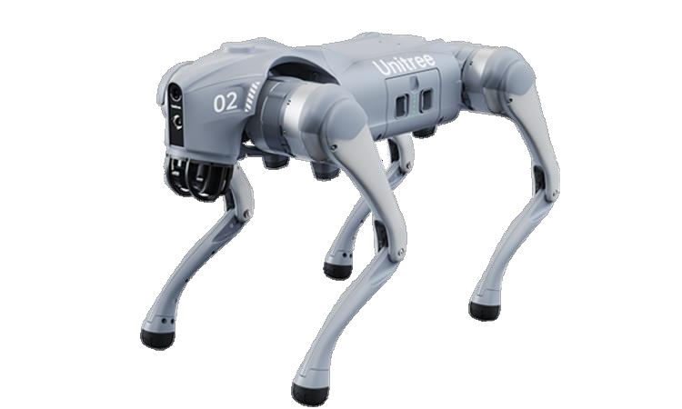
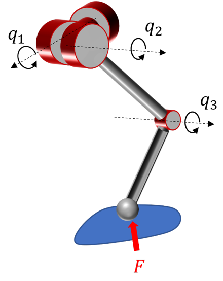

Generate
Combine normal, single-joint, and diagonal two-joint torque-loss conditions with diverse terrain families.
Under review · 2026
A single blind-locomotion policy that adapts to normal, single-joint, and selected diagonal two-joint failures—across deformable, uneven, moving, and stair terrains.

Quadrupedal robots increasingly operate where human access is difficult or dangerous, yet even a single joint failure can severely restrict mobility on uneven terrain. We present a unified framework for blind locomotion across diverse terrains under normal, single-joint, and selected diagonal two-joint failure conditions. Reward-Aware Population Allocation dynamically reallocates failure and terrain populations according to category returns, focusing training on difficult conditions. A history-based state estimator infers body velocity and joint-failure states and conditions a unified policy on these estimates. Simulation and real-robot experiments demonstrate locomotion on deformable, uneven, moving, and stair terrains without additional real-robot training.
Introduction
A fixed training budget must cover many combinations of terrain and joint failures, but those conditions do not learn at the same rate. Difficult cases such as stairs and diagonal failures remain under-trained with uniform sampling. Our central idea is to spend training where the policy struggles.

One affected leg
More training is assigned where the policy struggles.
Method
The framework combines condition generation, adaptive population allocation, and history-based failure-aware policy conditioning.

Combine normal, single-joint, and diagonal two-joint torque-loss conditions with diverse terrain families.
Independently assign more environments to failure and terrain categories with lower returns.
Estimate body velocity and joint-failure states from proprioceptive history to condition one actor.
Reward-Aware Population Allocation
Training conditions have different levels of difficulty. RPA converts category returns into target population ratios, giving difficult conditions more experience while preventing already-solved cases from dominating the budget.

Simulation results
The policy keeps tracking error in a narrow range across joint locations and maintains locomotion on discontinuous terrains where comparison methods degrade.
0.1273
Overall tracking RMSE
55% lower than Masking
98.2%
Fault-state accuracy
With BCE classification
12.5→0.5
Return spread
Across failure categories
1 policy
Unified controller
No policy switching

A single actor is used for every condition without switching to a failure-specific controller.
What makes it work
The ablation isolates the contribution of adaptive allocation, asymmetric training, and explicit fault-state supervision. Values are reported directly from Tables IV–V.
55.0% lower RMSE than Masking with the complete framework.
98.2% accuracy lets one actor condition its behavior on the inferred joint state.
Qualitative comparison
Stair ascent under a front-right knee-pitch torque loss. Baselines lose balance while traversing the stair discontinuities, while our unified policy completes the ascent.
Failure-conditioned baseline
Failure-mode transfer baseline
Action-masking baseline
Unified fault-tolerant policy
Simulation gallery
Additional qualitative rollouts of the proposed policy. The same actor is used in normal operation, representative single-joint loss, and diagonal two-joint loss.
Real-robot validation
Deployed on a Unitree Go2 without additional real-robot training. Each sequence shows locomotion under representative joint torque-loss conditions.
Outdoor stair runs without a disabled joint.
Normal state · reference run
Normal state · reference run
One motor is passive while the remaining joints reorganize locomotion.
Front-left hip-roll loss
Front-left hip-pitch loss
Front-left hip-roll loss
Front-left hip-roll loss
Two joints on diagonally opposing legs are disabled simultaneously.
FL + RR knee-pitch loss
FL + RR knee-pitch loss
FL hip-roll + RR hip-pitch loss
Citation
@article{anonymous2026faulttolerant,
title = {Learning Fault-tolerant Quadrupedal Locomotion in Rough Terrains},
author = {Anonymous Authors},
year = {2026},
note = {Under Review}
}